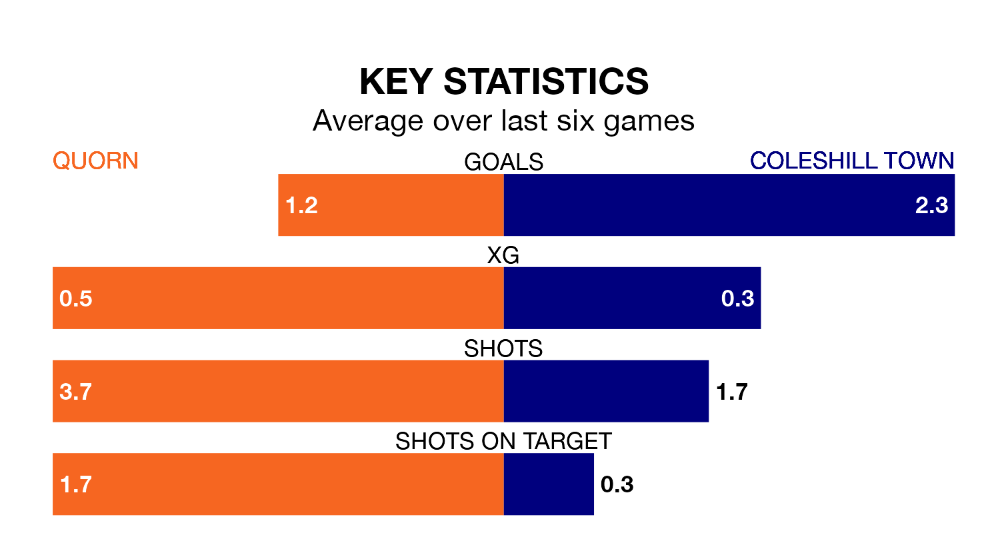

Coleshill Town make the journey to Sutton Park to play Quorn on Saturday looking to pick up points to end their three-game losing streak.
Coleshill's struggles have left them with five points from their last six Northern Premier League Division One – Midlands matches, while their opponents have earned eight from a possible 18.
With 46 goals in 25 games so far this season, Quorn are scoring more than average in the league with 1.8 goals per game. And they are conceding fewer than average, letting in 33 goals at a rate of 1.3 per game.
Coleshill are also above average scorers, with 1.6 goals per game, compared to a league average of 1.5. They have conceded 2.1 goals per game.
The hosts are seventh in the table after 25 games, of which they have won 11 and drawn seven, earning 40 points.
Town are seven places behind Quorn in 14th, with eight wins and four draws putting them on 28 points.
Quorn's last match was on January 27, a 4-0 win against Sporting Khalsa.
Coleshill lost 3-2 against Coventry Sphinx last time out, also on January 27.
Updated: 10:40 (UTC), 01/02/24